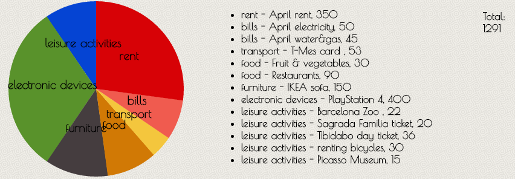

About Expense Calculator
Expense Calculator is a tool designed to help you visualize your expenses by category, by displaying them in a pie chart.
To begin, select a category from the drop-down menu and start adding items belonging to that category, together with their prices. For instance, you can choose Leisure Activities and add several activities and how much you spent on each of them. There are some pre-defined categories from which you can choose, but if your expenses do not fit in any of them, you can select Others. As you add items, a list of their names and prices is created and displayed, along with the total for all the items.
Here is an example of a possible chart:
It really adds colour to your expenses!
Behind the scenes
Expense Calculator was created using the Chartist JavaScript library. Easy to use and accessible to anyone, it is a charting library that can generate simple, responsive charts. More information can be found on their official webpage, in addition to other examples, chart types and documentation.